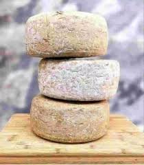

Fromage de
Brebis de
Cerdagne


⟹ Tommes d'Estive des Pyrénées Catalanes ⟸
Le fromage de brebis de Cerdagne ne peut être compris sans l’histoire pastorale du haut plateau cerdan. À plus de 1 000 mètres d’altitude, entre massifs pyrénéens, cols et vastes pâturages, l’élevage a longtemps constitué l’un des moyens les plus efficaces de transformer l’herbe de montagne en ressources alimentaires : viande, laine, lait et fromages de garde.

Les racines de ce pastoralisme sont très anciennes. Les synthèses historiques consacrées à la Cerdagne font remonter les premières formes d’agriculture, d’élevage et de transhumance verticale au Néolithique, vers le IVe millénaire avant notre ère. Les troupeaux exploitent alors la complémentarité entre les zones basses et les pâturages d’altitude, principe qui restera au cœur de l’économie montagnarde pendant des millénaires.
L’archéologie confirme la longue durée de cette occupation pastorale. Sur la montagne d’Enveitg, en Cerdagne, l’étude de cabanes, d’enclos et d’aménagements d’estive a permis de restituer les phases d’expansion et de repli des activités pastorales. Certains vestiges, notamment des dispositifs liés à la traite, témoignent de l’exploitation de brebis laitières et donnent une profondeur historique concrète à la fabrication fromagère en montagne.
Au Moyen Âge, les sources décrivent un système agricole où les ovins occupent une place majeure en Cerdagne, notamment pour la laine mais aussi pour la fabrication de fromages. Les droits de pâturage, les passages de troupeaux et les possessions des grands établissements monastiques structurent progressivement l’espace. La transhumance n’est donc pas seulement une pratique technique : elle façonne les chemins, les usages collectifs, les calendriers et les rapports entre communautés.
Le fromage répond alors à une nécessité très concrète : conserver le lait. En transformant un produit rapidement périssable en tomme pressée et affinée, les bergers disposent d’une nourriture transportable et d’une valeur marchande différée. Le principe du fromage de garde pyrénéen est intimement lié à la saison d’estive : fabriquer pendant les mois d’abondance permet de conserver une partie de la richesse du pâturage bien après la descente des troupeaux.
La fabrication traditionnelle repose sur un savoir-faire simple en apparence mais exigeant : lait emprésuré, découpage du caillé, égouttage, mise en moule, pressage, salage puis affinage. Le goût dépend du lait, de la flore pâturée, de la saison, de l’humidité des caves et de la durée d’affinage. Les fromages issus de troupeaux nourris sur les parcours d’altitude peuvent ainsi présenter des caractères très différents de ceux produits en vallée.
À partir de la seconde moitié du XVIIIe siècle et surtout au XIXe, l’économie agro-pastorale cerdane se transforme. L’élevage bovin progresse, les prairies naturelles et artificielles s’étendent grâce aux réseaux d’irrigation, tandis que l’élevage ovin perd une partie de son ancienne prépondérance. Les travaux historiques sur la Cerdagne montrent même qu’au XIXe siècle la production fromagère ovine d’estive recule dans certains secteurs au profit d’autres orientations d’élevage.
Cette évolution explique pourquoi il faut éviter de présenter le fromage de brebis cerdan actuel comme la reproduction inchangée d’une recette « immémoriale ». Il s’agit plutôt d’un héritage pastoral réinterprété par les éleveurs et fromagers contemporains : retour au lait cru chez certains producteurs, valorisation des pâturages, fabrication fermière, affinage prolongé et recherche d’un lien fort entre produit et montagne.
Le cadre pyrénéen donne néanmoins une cohérence à ces productions. L’INAO rappelle, à propos de la Tomme des Pyrénées IGP, que les fromages de garde ont historiquement été fabriqués l’été par les bergers et que leur forme comme leur croûtage facilitaient l’affinage. Cette histoire générale des tommes pyrénéennes éclaire les pratiques cerdanes, sans pour autant signifier que tout fromage de brebis de Cerdagne relève automatiquement de cette IGP.
Aujourd’hui, le fromage de brebis participe au renouveau des productions fermières des Pyrénées catalanes. Il entretient le lien entre élevage, entretien des paysages ouverts, estives, races adaptées à la montagne et vente locale. Derrière chaque tomme se lit donc une histoire beaucoup plus vaste : celle d’un territoire où la mobilité saisonnière des troupeaux, la gestion collective des pâturages et la transformation du lait ont contribué à façonner la Cerdagne.
Au Moyen Âge, l’élevage ovin — laine et fabrication de fromages — occupe une place particulièrement importante en Cerdagne.
INAO, cahier des charges « Vedell des Pyrénées Catalanes », synthèse historique du système agropastoralRepères documentaires : Turisme Cerdanya — chronologie historique · INAO — histoire agropastorale des Pyrénées catalanes · INAO — Tomme des Pyrénées.
Fromage jeune ou affiné : plus doux et souple à la sortie de la fabrication, il gagne en caractère et en puissance à mesure que l'affinage se prolonge, parfois plusieurs mois.
Fromage d'estive : fabriqué en cabane de montagne durant l'été, il se distingue par son goût plus typé, reflet direct des pâturages d'altitude.
Tomme aromatisée : certains affineurs proposent des versions au piment ou aux herbes de montagne.
Le fromage de brebis de Cerdagne se déguste sur tout le plateau cerdan, souvent directement auprès des bergers ou des fromageries d'affinage.
Les marchés de Font-Romeu et de Saillagouse, où les producteurs locaux proposent leurs tommes selon les arrivages de la saison.
Les caves d'affinage de Mont-Louis, qui sélectionnent et font vieillir les meilleures pièces des Pyrénées catalanes.
Les fermes d'estive, ouvertes à la visite l'été, où l'on peut parfois assister à la traite et à la fabrication en direct.